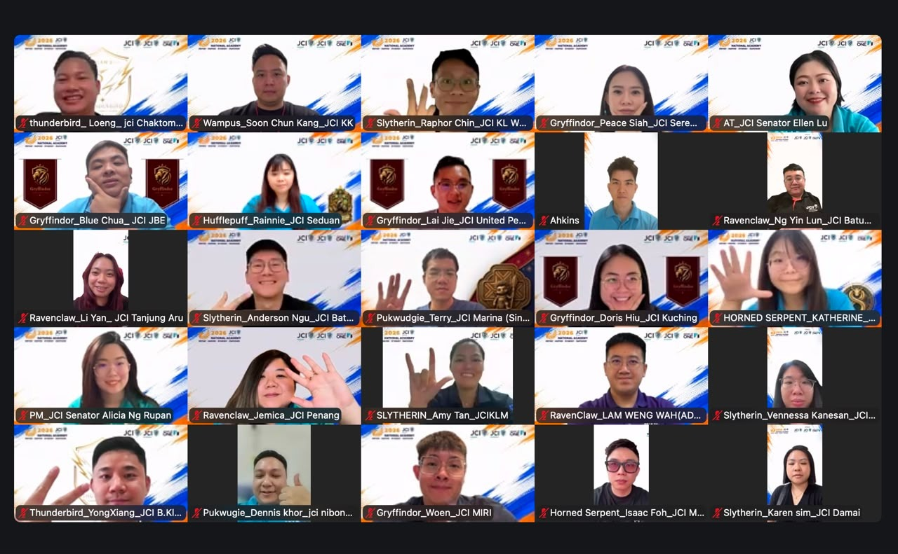
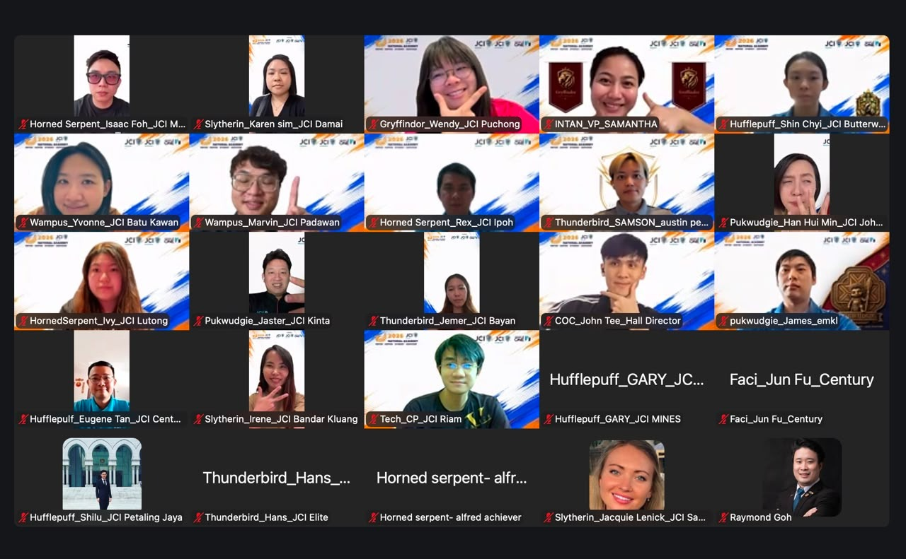

The First Gathering
Seventy screens. One shared beginning.
The magic began before anyone stepped into the Academy hall. Seventy future leaders came together online for Pre-Academy—the first chapter of a journey designed to challenge assumptions, build confidence and create friendships across Malaysia.
One by one, screens filled with new faces. Waves, smiles and distinctive hand signs quickly transformed a virtual meeting into a lively Academy community. Participants arrived carrying different experiences and expectations, but they shared one decision: to step beyond what was familiar and fully enter the journey ahead.
The magical theme came alive through the participants’ house identities. Each name and symbol became an invitation to take part, contribute and discover the teammates who would walk beside them during the Academy.
✦The first magic of the Academy was not found in a spell—it appeared when 70 individuals chose to show up as one learning community.
✦


Opening the Journey
A welcome with purpose.
Organizing Chairperson Jason Wong welcomed the class and set the spirit for the experience ahead. His message marked the moment when months of preparation became a real journey—one that would ask every participant to remain open, support one another and take ownership of their growth.
The facilitator and technical teams then helped participants navigate the first briefing, connect with their houses and prepare for the four-day Academy. Behind every smooth transition was a team working quietly to make sure all 70 voices had a place in the room.
The Journey Ahead
From online tiles to one Academy family.
Pre-Academy offered only a glimpse of what awaits in Johor, yet something important had already changed. The faces were no longer simply names on a participant list. They were teammates, fellow learners and future leaders beginning to recognise the strength of the community around them.
When the screens finally went dark, the journey did not end—it had only begun. The next time these 70 leaders gather, they will do so in person, ready to refine, inspire, build synergy and empower one another to rise beyond their limits.